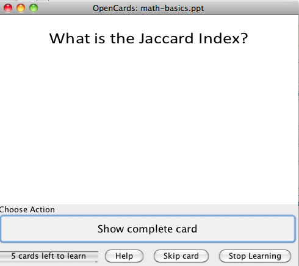
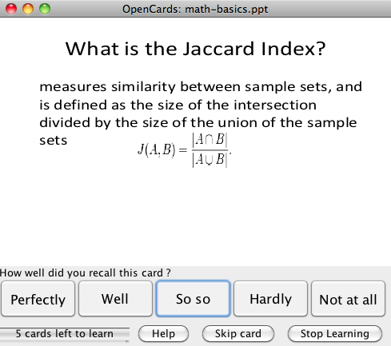

Long Term Learning
This learning mode is the default in OpenCards and will provide the best results if you want to recall knowledge for up to months or years in your brains Long Term Memory. LTM learning is based on two major principles:
1. Active Recall
OpenCards does not present your flashcards in some passive way, but enforces you to actively recall the answers of the flashcard questions. This type of learning has been shown to be superior compared to other kinds of learning like multiple-choice learning. A longer introduction to active learning is available at wikipedia.
{kind=link}
2. Forgetting curve
Practice too soon and you waste your time. Practice too late and you’ve forgotten the material and you’ll have to relearn it. OpenCards will choose just the right moment to let you review the things you want to keep in mind. Based on the idea of Ebbinghaus, that knowledge decays along a negative exponential curve, OpenCards will present facts for review right before you will have forgotten them. OpenCards predicts your memorization performance in order to maximize knowledge retention. Thereby it minimizes your time investment necessary to memorize tens, hundreds, thousands or even millions of facts. (… ok, forget about the millions)

Long term learning mode in OpenCards
OpenCards implements two different learning models. A box-based short-term learning procedure, also known as last-minute learning, and a more sophisticated long-term memorization model based on the principles of active recall and the forgetting model outlined above. The latter is implemented as an improved version of the SuperMemo2 algorithm. This algorithm was developed quite some time ago, but is still the basis of many popular flashcard learning tools (Anki, Mnemosyne, OpenCards).
Whereas the last-minute mode is designed for to quickly cram large amounts of facts (e.g. in preparation to an examination), the LTM-mode predicts the user’s memorization performance in order to maximize knowledge retention. Thereby it minimizes the time investment necessary to memorize tens, hundreds, or even thousands of facts.
The LTM-mode starts after the “Start Learning”-button has been pressed in the category view. Internally OpenCards will then collect all cards of the selected card files (or all current files if no files is selected) scheduled until today. To make sure that items are not forgotten if you’ve skipped your daily OpenCards quarted, this will also include items that were scheduled to a past date. All collected cards will be then presented in a file-wise manner: OpenCards iterates over all files containing at least one scheduled item and presents this for learning/reviewing.
During learning, OpenCards presents scheduled slides to evaluate the users' retention level. First only the card-question is being presented. Normally this will be the slide title, but OpenCards supports also other questioning modes. After the user has tried to recall the fact, she can give a feedback about her retention level. Based on the reported retrieval-strength OpenCards will update the learning model of the current slide and reschedule it in an optimal manner.
The LTM learning mode has two simple views;
- Recall: In this state just the card question is shown, and the student (you!) should try to actively recall the answer
- Rate Recall Ability: Allows you to judge your level of retention of the current flashcard. Internally, OpenCards will calculate an optimal next recall date based on your rating.
{kind=link}
{kind=link}
Keyboard mapping


The shortcuts for “Hardly” and “Well” require both keys to be pressed at the same time.
Why is it so easy to cheat?
Indeed, you can simply tell OpenCards that you know all your cards perfectly. It won’t complain. But you don’t make any progress, and then we would suggest that you don’t waste your time in front of your computer, but rather do some exercise, have fun with your friends and family, have a beer, or watch a good movie.
However, if you truly want to memorize your cards, you should be honest with OpenCards and yourself and report back the actual level of retention. This will help the LTM scheduler to predict an optimal next date for the next review of a learning item.
Questions?
If you’ve found this help section to be incomplete or confusing, feel welcome to ask questions and to suggest improvements in our discussion forum.